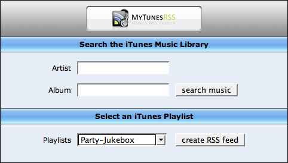
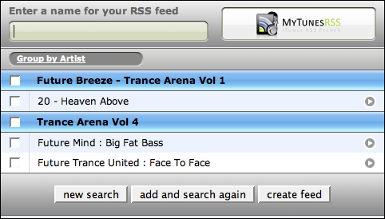

The web application
Once the server is started you can access the web application with a browser. Please test the application first by using a browser on the same system you are running MyTunesRss. Enter "http://127.0.0.1:8080" in your browser's address field. In case you changed the port in MyTunesRSS, you have to use that one of course. You should see the search page or the login page in case you activated authentication. If you get one of the pages, MyTunesRSS works alright. If you get problems accessing the web application from other systems, please check your network configuration for problems (e.g. a blocking firewall).

Enter you password on the login form in case you have activated authentication. This way you can restrict access to your iTunes music library and protect it from unauthorized access.
You can use a playlist to create an RSS feed right away on the search form. If you do not have an appropriate playlist, you can also search for titles by artist and album. Just enter search terms and click the "search music" button. All titles matching both your search terms will be returned. In case you leave both fields blank you will find all titles of your library. The result is restricted to a maximum of 200 titles, so usually you will not get a result when searching without any search term.
In the search result you can specify a name for the RSS feed to create. If you leave the field blank, a default name will be used. Below this field you can group the results by artist or album. You can select any titles and use the button at the end of the page to create the RSS feed from the selection. Use the checkbox of a group to select all titles of this group, i.e. the artist or album depending on the current grouping. With the little arrow button on the right of a title you can directly play it, i.e. download it to the target device.